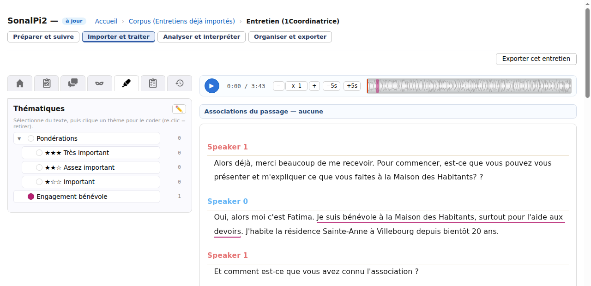

Importer et traiter
Coder un premier passage avec un thème
Coder consiste à associer un thème à un passage de transcription pour le repérer et le retrouver ensuite. Par exemple, le thème Engagement bénévole peut réunir les passages où les personnes expliquent leur participation à une association.
Un thème ne se limite pas forcément à un sujet : il peut aussi désigner une idée, une attitude ou un passage que vous souhaitez relire. À vous de choisir ce qui est utile pour votre étude.
Cette page décrit un premier codage dans un corpus local.
Avant de commencer
Il vous faut un corpus contenant au moins un entretien avec du texte. Vous pouvez importer votre propre transcription ou essayer sur une copie d’exemple. L’audio n’est pas nécessaire pour ce premier codage.
Essayer sans utiliser vos propres données
- Depuis l’accueil de SonalPi, cliquez sur Explorer les corpus exemples.
- Dans Entretiens déjà importés, cliquez sur Ouvrir ma copie.
- Vérifiez l’emplacement proposé. Utilisez Modifier… si vous souhaitez en choisir un autre, puis cliquez sur Ouvrir ma copie dans la fenêtre de préparation.
Vous obtenez une copie modifiable de quatre entretiens fictifs, sans codage thématique initial. Aucun parcours guidé ne démarre.
Si vous avez déjà préparé cet exemple, le bouton devient Reprendre mon corpus. Vos modifications précédentes sont conservées. Pour une nouvelle copie, ouvrez Options, puis Commencer dans un nouveau corpus….
Ouvrir l’entretien et les thèmes
- Dans Importer et traiter, cliquez sur le bouton Ouvrir de la carte de l’entretien. Pour suivre notre exemple, choisissez 1Coordinatrice.
- Dans les onglets à gauche de l’entretien, ouvrez Thématiques. Son nom apparaît au survol de l’icône ; le panneau affiche ensuite ce titre.
Vous avez la liste des thèmes à gauche et la transcription à droite.
Créer votre premier thème
- Dans le panneau Thématiques, cliquez sur le crayon Éditer les thèmes.
- Dans la fenêtre Édition des thèmes, cliquez sur + Thème.
- Saisissez Engagement bénévole dans le nom du nouveau thème, puis appuyez sur Entrée.
- Si vous le souhaitez, changez sa couleur avec la pastille de sa ligne.
- Fermez la fenêtre avec ✕.
Le thème apparaît dans le panneau. Il est disponible pour tous les entretiens du corpus, mais aucun passage n’a encore été codé avec lui.
Les thèmes Pondérations et leurs sous-thèmes peuvent déjà être présents. Vous n’avez pas besoin de les supprimer pour ajouter les vôtres.
Associer le thème à un passage
- Dans la transcription, sélectionnez le passage voulu en faisant glisser la souris sur son texte.
- Cliquez une fois sur Engagement bénévole dans le panneau de gauche.
Dans l’entretien 1Coordinatrice, vous pouvez choisir ce passage situé au début :
Je suis bénévole à la Maison des Habitants, surtout pour l’aide aux devoirs.
Un repère coloré apparaît sur le passage. En survolant le passage codé, vous pouvez lire le nom du thème. Le codage est enregistré automatiquement ; attendez que l’état en haut de la fenêtre indique à jour avant de fermer l’application.

La transcription n’est pas copiée ailleurs et ses mots ne sont pas remplacés : vous leur associez un repère. Vous pourrez ensuite réunir les passages portant ce thème dans Analyser et interpréter, avec Tri et synthèse.
Pour coder un autre passage, sélectionnez-le puis cliquez sur le thème voulu. Un même passage peut porter plusieurs thèmes : gardez la sélection et cliquez sur chacun des thèmes souhaités.
Retirer un codage sans supprimer le thème
Sélectionnez exactement le même passage, puis cliquez de nouveau sur le même thème. Le codage est retiré ; le texte et le thème restent disponibles.
Ne cliquez donc pas deux fois pour confirmer un codage : sur la même sélection, le second clic le retire.
Supprimer un thème est une autre action, qui concerne sa définition dans le corpus. Ne l’utilisez pas pour retirer le thème d’un seul passage.
Si le résultat n’est pas celui attendu
- Le mauvais texte a été marqué : contrôlez les limites de votre sélection. Dans un même paragraphe, SonalPi étend les limites aux mots entiers.
- Le thème est grisé : il peut être désactivé. Dans Édition des thèmes, vérifiez que sa case Actif est cochée.
- Vous ne pouvez pas cliquer sur les thèmes : vérifiez si l’entretien est ouvert en lecture seule. La consultation ne permet pas de modifier ses codages.
Pour préciser votre grille, consultez l’organisation et la description des thèmes. Pour revoir la différence entre thème, variable, cas et recueil, consultez les notions utiles.